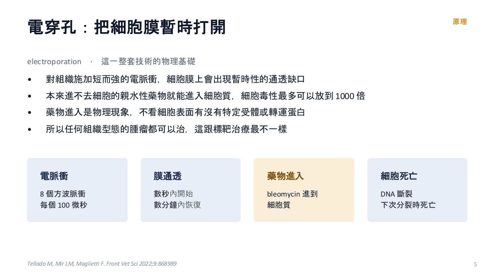
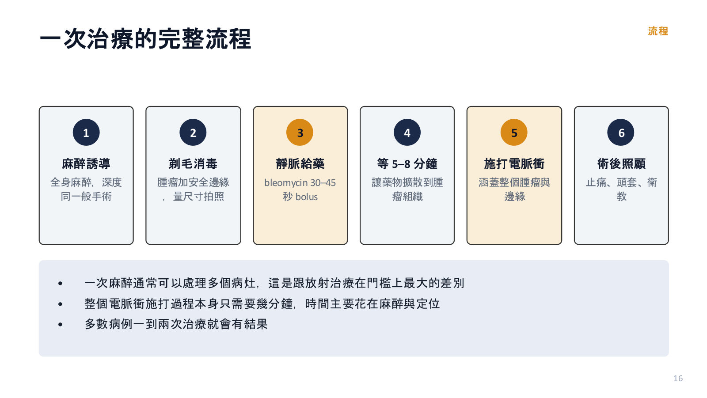
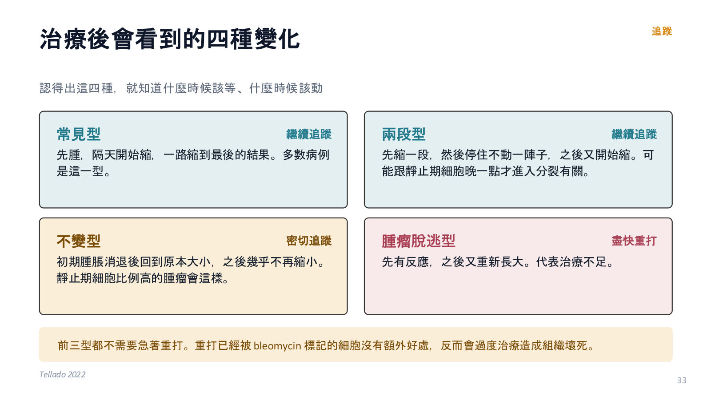
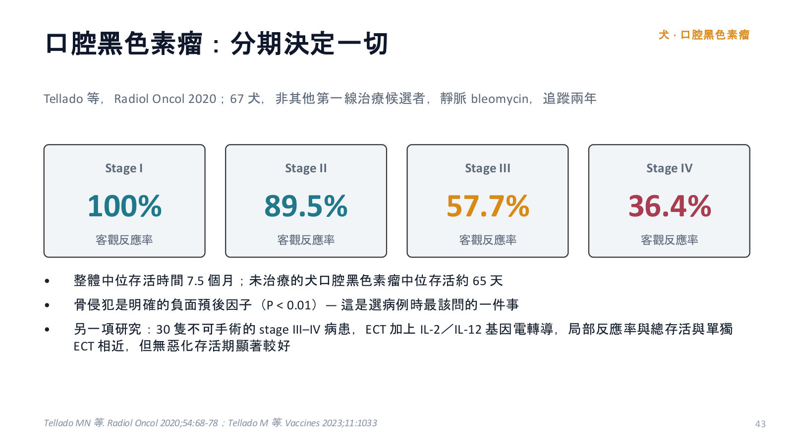

電化療在獸醫腫瘤科的應用
主講：Rita Ho, DVM（practice limited to oncology）
Electrochemotherapy in Veterinary Oncology｜台灣家庭獸醫進階課程，兩小時（投影片 65 張＋2 頁講義）｜場次 03
依講者的投影片與講義整理，沒有課堂錄音；投影片本身是中文，這裡以重點整理為主，數字與劑量照投影片。
⭐ 必記原則
- 電化療是局部治療：電脈衝暫時打開細胞膜讓藥進去，取代不了分期與系統性治療
- 最適合：≤ 3 cm³、位置淺、切下去要重建（眼瞼、鼻鏡、肢端）或不完全切除後的位置
- 標準：靜脈 bleomycin 15,000 IU/m²（30–45 秒 bolus，單次上限 30,000 IU），5–8 分鐘後打電；8 個 100 µs 脈衝、針電極 1000 V/cm
- Bleomycin 細胞毒性最多放大 1000 倍；腫瘤是慢慢縮，最大效果在 6–8 週；不要在 2–4 週就宣告沒效
- 只有「腫瘤脫逃型」（先縮又長）要盡快重打；已治療病灶至少間隔 4 週；犬 bleomycin 累積上限 200,000 IU/m²（肺纖維化）
- 一定要全身麻醉；MCT 從周邊往中心打、術前壓去顆粒化；鼻、舌、眼瞼、喉部術後前 48 小時用類固醇，NSAID 與類固醇不可併用
- 低惡性度 MCT 完全反應 100%、高惡性度 45%；貓鼻鏡 SCC 總反應 96.7% 但無疾病間隔 136 天（放療 916 天）
- 證據以回溯 case series 為主：可以說有效，不能說優於手術或放療；台灣的限制在藥、機器、法規
電化療在門診裡的位置
▾先講結論
| 是什麼 | 一種局部治療：用電脈衝把細胞膜暫時打開讓藥物進去；只作用在電場涵蓋範圍；取代不了分期與系統性治療的判斷 |
| 最適合誰 | 小體積、位置淺、難開：≤ 3 cm³ 的皮膚或皮下病灶；眼瞼、鼻鏡、肢端這種切下去要重建的位置；不完全切除後的位置 |
| 不要期待什麼 | 不是更好的手術：沒有跟手術或放療對照的隨機試驗；深部、體積大、電極打不到效果差；高惡性度仍需多模式治療 |
1. 原理與藥物
▾電穿孔：把細胞膜暫時打開
- 短而強的電脈衝讓細胞膜出現暫時性缺口，本來進不去的親水性藥物進入細胞質，細胞毒性最多放大到 1000 倍
- 藥物進入是物理現象，不看受體或轉運蛋白，所以任何組織型態的腫瘤都可以治
- 流程：8 個 100 µs 方波脈衝 → 數秒內膜通透、數分鐘內恢復 → bleomycin 進入 → DNA 斷裂、下次分裂時死亡
- 可逆性電穿孔（ECT、基因電轉導）：膜會修復、殺細胞的是藥；不可逆性電穿孔（IRE）：屬於消融，不分好壞細胞
- 選擇性來自 bleomycin（主要殺正在分裂的細胞），所以血管、神經、軟骨可保留，外觀結果通常不錯
- 本來就能自由進出細胞的藥（doxorubicin、vincristine）加電脈衝並不會更有效，所以只有三個藥可用

只有三個藥可以用
| 順位 | 藥物 | 重點 |
|---|---|---|
| 首選 | Bleomycin | 靜脈或腫瘤內皆可；靜脈能涵蓋腫瘤邊緣；本身是免疫活化劑；犬貓多數病例的標準 |
| 第二 | Cisplatin | 只能腫瘤內；馬 sarcoid 主要用這個；貓不建議（致命性肺水腫風險）；bleomycin 達上限時的替代 |
| 第三 | 氯化鈣 | 只能腫瘤內；細胞內鈣過載、ATP 耗竭；前兩者拿不到時才用，限小體積 |
Carboplatin 只有體外資料，臨床上不建議代替 cisplatin。
為什麼腫瘤是慢慢縮小
- Bleomycin 造成 DNA 雙股斷裂：細胞被「標記為將死」，在下一次分裂時才死亡
- 治療後逐漸縮小、壞死很少；最大效果通常在 6–8 週後
- 含大量靜止期細胞的腫瘤可能先停住一段時間，不要誤判為失敗
血管鎖住效應（vascular lock）
施打電脈衝當下治療區域血流立即中斷：藥物留在腫瘤內、腫瘤缺血、當場止血。會流血、有惡臭的淺層病灶即使沒有根治機會，一次治療就能明顯改善。反過來，舌頭這種終末血流部位要小心，大範圍施打可能造成前段壞死。
免疫在電化療裡的角色
- Bleomycin＋電脈衝造成免疫原性細胞死亡：calreticulin（「吃我」）、ATP（「過來」）、HMGB1（「出事了」，治療後 24 小時最明顯）
- 樹突細胞把抗原帶到淋巴結、活化 CD8⁺ T 細胞；免疫功能不全小鼠反應明顯較差；少數有 abscopal effect
- 臨床推論：同時做系統性化療可能不划算（免疫抑制可能削弱這部分效果），需個案評估
發展與證據強度
- 1991 人醫第一個臨床試驗；1997 第一個獸醫試驗（貓軟組織肉瘤）；2006 ESOPE 標準操作；2018 人醫更新；2022 第一份獸醫專用指引（Tellado）
- 拉丁美洲到 2019 年超過 120 個中心、20,000 個動物病患；亞洲臨床報告與訓練資源都還很少
- 可以說：多個獨立團隊 case series 反應率一致偏高；毒性低、多為局部可自限；小體積淺層病灶反應特別穩定
- 不能說：優於手術或放療。唯一「跟手術比較」的研究，ECT 組是飼主拒絕手術才納入；多數回溯、單臂、無對照
- 常被引用的「反應率 70–100%」來自指引作者群自己的文獻回顧，不是系統性回顧；各研究評估標準（WHO、VCOG RECIST）與追蹤長度不一
2. 標準操作：從挑病例到打完電
▾一次治療的完整流程
- 麻醉誘導（全身麻醉，深度同一般手術）
- 剃毛消毒，腫瘤加安全邊緣，量尺寸拍照
- 靜脈 bleomycin，30–45 秒 bolus
- 等 5–8 分鐘讓藥擴散到腫瘤
- 施打電脈衝，涵蓋整個腫瘤與邊緣
- 術後止痛、頭套、衛教

一次麻醉可處理多個病灶（和放療門檻最大的差別）；打電本身只要幾分鐘；多數病例一到兩次治療就會有結果。
哪些病例可以考慮
| 適應症 | 第一線治療做不到的皮膚或皮下腫瘤；出血、潰瘍或疼痛影響生活品質的病灶；口腔或鼻腔腫瘤（單獨或搭配手術）；不完全切除後的疤痕與皮瓣；術中擴大安全範圍；系統性治療中反應不好的局部病灶；大腫瘤術前減積 |
| 不適合／打折 | 腫瘤比電極針導電長度還厚；電極到不了的位置（篩板、眼球後、鼻竇）；懷孕或哺乳；bleomycin 累積劑量已達上限 |
「飼主拒絕手術」可以是合理的適應症，但前提是其他選項都完整說明過。
治療前一定要完成的檢查
- 組織病理診斷（治療方向仍取決於組織型態與分級）
- 完整分期：胸腔 X 光三張、腹部超音波；必要時 CT 或 MRI
- 血液學、凝血、肝腎功能；bleomycin 約一半經腎排除，腎功能差可減量
- 麻醉風險評估（含心臟）
- 確認過去 bleomycin 累積劑量：犬上限 200,000 IU/m²；貓尚未建立
術前評估要在治療前四天內完成。
三個位置要特別小心
| 位置 | 注意 |
|---|---|
| 喉部或靠近喉部 | 確認會不會影響插管；術後腫脹可能阻塞呼吸道；大病灶先減積再打切除處；必要時氣管切開 |
| 舌頭 | 終末血流，血管鎖住可能讓舌尖壞死；尾側病灶會阻塞呼吸道；先手術減積再打；早期可能需要餵食管 |
| 電極插不到 | 篩板、眼球後、鼻竇：勉強做只會失敗；改化療＋放療，必要時手術 |
治療鼻部或口腔的病患，麻醉後一定要監控到完全清醒才能離開（指引明確寫入）。
腫瘤多大還能治
體積 V = π/6 × a × b × c（長、寬、厚；扁平病灶用 b 代替 c）。每次治療前量所有病灶並拍照（放尺、固定角度）。腫瘤厚度必須小於電極針的導電長度（約 1–4 cm，只算導電段）；太厚就先減積或規劃分兩次。
| 目標 | |
|---|---|
| 根治性 | ≤ 3 cm³ 效果最好；厚度 < 1 cm 的大面積淺層病灶即使超過 3 cm³ 也適合 |
| 緩和性 | 大病灶也能做；目標是止血、減少滲液與惡臭、緩解疼痛，不要用反應率當成功指標 |
脈衝參數與電壓
- 8 個單極方波脈衝，每個 100 µs；重複頻率 1–5000 Hz（不影響反應；> 100 Hz 只會一次肌肉收縮）
- 建議自動化機器；輸出電流 35 A 足夠；要能維持電壓不掉，並有電弧、短路、電壓下降警示
| 情況 | 電壓距離比 | 0.4 cm 間距時 |
|---|---|---|
| 針電極插入組織 | 1000 V/cm | 400 V |
| 平板電極隔著皮膚 | 1300 V/cm | 520 V |
| 平板電極直接放在腫瘤上（減積後） | 1000 V/cm | 400 V |
先量電極實際間距（cm）× 係數＝設定電壓。不要為了打深自行調高電壓：犬 STS 1200 V/cm 的局部毒性顯著高於 1000 V/cm（P = 0.0473）。機器警示電場不足時，把針退出一半再打、安排下次處理深部，不是改參數。
電極與插針
- 針電極永遠優先：穿過高阻抗皮膚、電場較均勻；通常兩排各 3–4 根，間距 0.4–0.5 cm
- 平板電極只適合侵犯幾毫米的淺層病灶（眼瞼、耳翼可夾著治療）；接觸不好用超音波凝膠（寧多勿少，不要用凡士林）；平板間距 4 mm 時最大深度約 3 mm
- 相鄰施打要稍微重疊；整個腫瘤表面都要覆蓋到（電場在電極外急速衰減）
- 肥大細胞瘤從周邊往中心打，減少去顆粒化造成的紅腫、水腫與凝血問題
用藥
| 項目 | 內容 |
|---|---|
| 靜脈 bleomycin | 15,000 IU/m²，30–45 秒 bolus；單次上限 30,000 IU（相當 2 m²）；5–8 分鐘後開始打電 |
| 有效時間 | 貓與小型犬約給藥後 5–25 分鐘；其他體型約 8–40 分鐘；年紀大或腎功能差會延長。超時仍有部分效果：打完、做記號、追蹤時特別留意 |
| 腫瘤內 bleomycin | 1,000 IU/mL，250 IU/cm³ 腫瘤，只用在 ≤ 2 cm³ |
| 腫瘤內 cisplatin | 1 mg/mL，把腫瘤體積灌滿；馬首選，貓不建議 |
| 腫瘤內氯化鈣 | 9 mg/mL，腫瘤體積的一半；第三選擇 |
- 單位換算：1 mg（效價）＝ 1 USP unit ＝ 1,000 IU；台灣人用藥標示 mg
- BSA（m²）：講義寫「k × 體重(kg)^(2/3) ÷ 100，犬 k = 0.101、貓 k = 0.1」；照字面會小 100 倍，實際應為 0.101 × 體重^(2/3)（犬）或 0.1 × 體重^(2/3)（貓），也就是常見的 10.1 × W^(2/3) ÷ 100
- 腫瘤內注射：打完立刻打電；中心單點進針放射狀給藥、慢慢退針；多病灶一個一個打藥一個一個打電；不要注射周圍正常組織（會壞死）
- 累積上限犬 200,000 IU/m²（主要風險肺纖維化：皮膚與肺的 bleomycin hydrolase 特別低）；達上限改腫瘤內 cisplatin（貓除外）或氯化鈣
麻醉
- 一定要全身麻醉，即使只用平板電極；深度同該部位外科手術；可加局部阻斷（例如鼻部用眶下神經阻斷）
- 用自己的常規即可（台灣與美國多用 dexmedetomidine）
- MCT：有研究在插管前 20 分鐘給 dexamethasone 0.5 mg/kg＋ranitidine 2 mg/kg IV 壓制去顆粒化
術後止痛與傷口
| 一般部位 | 以 NSAID 為主，大病灶可合併 opioid；多數只需幾天 |
| 鼻部、舌頭、眼瞼、喉部 | 前 48 小時先用類固醇壓住腫脹，之後接回 NSAID |
| 絕對不要 | NSAID 與類固醇同時用；換藥中間要停幾天 |
傷口不需包紮，接下來幾天會滲液，教飼主清潔並戴頭套；預防性抗生素可口服或肌注（感染風險本來就低）；事先告知可能脫毛、色素改變。
新手最常犯的六件事
- 切除範圍沒打到：針垂直腫瘤表面而不是腫瘤所在的平面
- 重疊太多：同一塊組織被電兩次以上
- 牙齒卡在電極之間：嚴重影響電場，建議先拔
- 金屬器械太靠近：導電、短路、損壞機器
- 治療區域出血：血液導電高造成電弧或電場偏移，止血要做好
- 電極重複使用到氧化：肉眼看不出但療效變差
另外：施打前先對空氣放一次脈衝確認機器正常；監視器上的心電圖假影是電流干擾，不是心律不整。
3. 治療後怎麼追蹤、什麼時候再打一次
▾反應評估
回診：治療後 15 天，以及第 1、2、4、6 個月；每次量尺寸拍照。多用 VCOG RECIST v1.0（CR／PR／SD／PD）。最大效果通常在 6–8 週後。殘留硬塊分不出是腫瘤還是疤痕時，切片比繼續觀察或直接重打都好。
治療後會看到的四種變化
| 型態 | 表現 | 處理 |
|---|---|---|
| 常見型 | 先腫，隔天開始縮，一路縮到最後 | 繼續追蹤 |
| 兩段型 | 先縮一段，停住一陣子，又開始縮（靜止期細胞晚一點進入分裂） | 繼續追蹤 |
| 不變型 | 初期腫脹消退後回到原本大小，幾乎不再縮 | 密切追蹤 |
| 腫瘤脫逃型 | 先有反應，之後又重新長大（治療不足） | 盡快重打 |

什麼時候該再打一次
- 第一次就沒有治療完整（太厚、範圍太大、規劃分次）：未治療部位隔天就可以打
- 病灶重新長大（腫瘤脫逃型）：越早越好，不要等下次回診
- 出現新病灶：不受等待期限制
已治療過的病灶至少間隔四週（靜脈 bleomycin 的建議）；真正原則是「等到反應完全出現」。
局部毒性分級
| 分級 | 表現 |
|---|---|
| 0 | 沒有毒性 |
| 1 | 輕度水腫 |
| 2 | 水腫或壞死，範圍 < 1 cm |
| 3 | 嚴重水腫 |
| 4 | 深部壞死 |
| 5 | 嚴重水腫合併組織缺損 |
- 多數犬貓毒性 ≤ 2 級
- 貓鼻鏡 SCC：51% 毒性 ≤ 2；毒性 > 2 的貓復發或惡化機率較高
- 腫瘤越大，反應與毒性兩邊都較差
毒性偏高常代表電場設定或施打方式有問題，同時也影響療效。
少見但要事先講的風險
- 組織缺損：腫瘤侵犯整層組織時可能形成瘻管或明顯缺損，可能需要重建；一定要寫進同意書
- 外觀：脫毛與色素改變（部分會恢復，但不能保證）
- 系統性：腫瘤溶解症候群（非常少見）；bleomycin 累積過高的肺纖維化是唯一要長期記錄追蹤的系統性毒性
同意書四件事：藥物風險、術後疼痛、瘻管與組織缺損、可能需要多次治療。把「治療後會先腫」講在前面。
4. 各腫瘤的實際數據
▾先看大方向（不同研究、不同標準，只能當方向）
| 腫瘤 | 物種 | 文獻中的反應 | 來源 |
|---|---|---|---|
| Sarcoid | 馬 | 四年不復發率 97.9%（動物） | Tamzali 2012 |
| 低惡性度肥大細胞瘤 | 犬 | 完全反應 100%（27/27） | Ojeda 2026 |
| 鼻鏡鱗狀上皮細胞癌 | 貓 | 總反應率 96.7%、完全反應 65.6% | Simčič 2021 |
| 口腔黑色素瘤 stage I | 犬 | 客觀反應率 100% | Tellado 2020 |
| 膀胱移行上皮癌 | 犬 | 完全反應 62%（13/21） | Rangel 2023 |
| 高惡性度肥大細胞瘤 | 犬 | 完全反應 45%（5/12） | Ojeda 2026 |
| 口腔黑色素瘤 stage IV | 犬 | 客觀反應率 36.4% | Tellado 2020 |
規律：小體積、位置淺、低惡性度反應最好；腫瘤體積是所有研究中最一致的預後因子。
犬肥大細胞瘤
- 早期資料（Kodre 2009、Spugnini 2006/2011、Lowe 2017 51 犬四種用法）都用 Patnaik 三級，跟現在的 Kiupel 對不太起來；Kodre 的 ECT 組是飼主拒絕手術才納入，不能當療效比較
| Ojeda 2026（29 犬 39 顆，單獨 ECT） | Kiupel 低惡性度 | 高惡性度 |
|---|---|---|
| 完全反應率 | 100%（27/27） | 45%（5/12） |
| 中位存活 | 1,198 天 | 210 天（P = .001） |
| 無疾病間隔 | 1,080 天 | 45 天（摘要寫 455 天，內文與圖說寫 45 天） |
| 平均腫瘤體積 | 3.2 cm³ | 8.2 cm³ |
| 平均治療次數 | 1.1 | 1.6 |
整體完全反應 79%；所有惡化都是高惡性度。限制：回溯、單一病理師、沒分皮膚型與皮下型；高惡性度組腫瘤本來就比較大。
| 合理 | 低惡性度、小體積、位置難開（眼瞼、唇部、肢端、會陰）、飼主拒絕大手術：可以是手術的替代選項 |
| 要很小心 | 高惡性度：單獨使用完全反應不到一半，只考慮小體積、手術做不到的位置，一定要放在多模式治療裡 |
| 技術 | 從周邊往中心打；術前壓制去顆粒化；先減積再打完全反應更好 |
犬軟組織肉瘤
- Torrigiani 2019：52 犬 54 顆，單獨、術中、術後輔助三種用法；77.8% 在四肢；結論是安全有效的局部控制
- 毒性與電壓有關：1200 V/cm 顯著高於 1000 V/cm（四肢皮下組織少特別重要）
- Spugnini 2019：30 例 bleomycin＋cisplatin 併用輔助
定位：四肢 STS 不完全切除、飼主不想再開刀或跑放療時，術後輔助 ECT 是有 case series 支持的選項，但沒有跟放療對照的資料。
犬口腔黑色素瘤：分期決定一切
| Tellado 2020（67 犬，靜脈 bleomycin） | 客觀反應率 |
|---|---|
| Stage I | 100% |
| Stage II | 89.5% |
| Stage III | 57.7% |
| Stage IV | 36.4% |
- 整體中位存活 7.5 個月；未治療約 65 天
- 骨侵犯是明確的負面預後因子（P < 0.01）
- 30 隻不可手術 stage III–IV：ECT＋IL-2／IL-12 基因電轉導，無惡化存活顯著較好，總存活相近

犬的其他腫瘤
- SCC：口腔非扁桃腺 SCC 為 case series；皮膚 SCC 縮小且增生指數下降
- 肛門周圍腫瘤（肝樣腺瘤與上皮瘤）：反應率一直很高，是最早記錄有良好反應的部位之一
- 鼻腔：單針電極微創做法（鼻淚管與鼻道腫瘤），侵犯篩板或眼球後不適用
- 膀胱 TCC（Rangel 2023，21 犬，開腹後在膀胱壁打電）：完全反應 62%、部分反應 24%；19/21 只有輕微不良反應、2 例輸尿管狹窄；排除漿膜侵犯與轉移，仍是安全性與可行性研究
貓鼻鏡鱗狀上皮細胞癌
| 研究 | 族群 | 結果 |
|---|---|---|
| Tozon 2014 | 11 貓 17 顆，Tis–T4 | 完全反應：貓 81.8%、病灶 87.5% |
| Simčič 2021 | 61 貓，六個中心 | 總反應率 96.7%、完全反應 65.6%；中位無疾病間隔 136 天、無惡化存活 65.5 天、復發 22.5% |
| Ferrer-Jorda 2024 | 21 貓，局部晚期 | 描述結果與不良反應 |
| 2026 前瞻 | 35 貓 | 完全反應 65.7%、部分反應 34.3%；腫瘤 > 2.3 cm 時高毒性與只達部分反應的風險明顯上升 |
| 電化療 | 總反應可到 96.7%；中位無疾病間隔 136 天；一次麻醉、一到兩次；不需放療中心 |
| 根治性放療 | 44 貓，10 × 4.8 Gy 一週內完成；全部完全反應；中位無疾病間隔 916 天 |
兩組數字不能直接相減，但可以誠實說：目前沒有資料顯示電化療的局部控制時間能跟根治性放療相比。
貓注射部位肉瘤
Spugnini 2011（術後輔助 cisplatin ECT）、2020（bleomycin＋cisplatin，不完全切除，復發率 18.5%、中位存活約 1,000 天）、2007（術中 vs 術後）。都是單一團隊回溯資料。定位：積極手術仍是主軸，電化療是切除邊緣不理想又拿不到放療時的補強。
馬與特殊寵物
馬 sarcoid（Tamzali 2012，194 顆）：四年不復發 97.9%（動物）、99.5%（腫瘤）；單獨 ECT 完全反應 92.3%；腫瘤內 cisplatin 每兩週一次。雪貂、刺蝟、龜、蛇、鳥、魚、豬甚至象都有報告，偏好腫瘤內給藥。
延伸應用與搭配
- 基因電轉導（IL-12）：補上局部治療沒有全身效果的缺口；腫瘤內給比周邊給好；合併時反應至少等兩個月再評估；台灣目前沒有質體可用
- 鈣電穿孔：氯化鈣取代化療藥，不需防護裝備、成本低；獸醫資料很少（4 隻犬 180 天反應率 75%）；沒有出現臨床高血鈣
- 搭配手術：術前減積（> 3–4 cm³）、術中清切除範圍、術後補強；搭配放療：深部用放療補、放療後抗性復發用 ECT；搭配化療：要權衡免疫抑制，節拍式也是選項
以上搭配主要來自指引作者的臨床經驗與生物學推論，沒有隨機試驗支持哪種順序較好。
5. 在台灣可以怎麼用與三個病例
▾在台灣要面對的三件事
| 藥 | Bleomycin 與 cisplatin 都沒有動物用許可證，臨床用人用藥（例如 Bleocin）；人用藥在獸醫的使用權責仍待修法 |
| 機器 | 獸醫專用電穿孔儀在台灣沒有正式代理；電極是耗材，氧化後明顯影響療效 |
| 人 | 能做全身麻醉與甦醒監控；能安全調配化療藥（防護裝備與層流櫃）；能做完整分期與追蹤 |
技術本身不難，難的是這三件事。
費用與飼主溝通
- 接受度通常不低：門檻比放療低、一次麻醉、多發病灶可一次處理；主要成本是耗材、藥品與麻醉
- 同意書前要講：治療後會先腫（不是失敗）、6–8 週才看得到最大反應、可能不只一次、可能脫毛與色素改變、全層侵犯可能形成缺損或瘻管
- 把「做完就會消掉」改成「兩個月後我們一起看結果」
- 緩和治療的成功指標是有沒有止血、比較不痛、照顧比較輕鬆，不是腫瘤縮多少
三個病例
| 病例 | 討論方向 |
|---|---|
| 12 歲米克斯犬，跗關節外側 1.8 cm 皮膚腫塊（FNA 肥大細胞瘤，飼主不願做皮瓣） | 先補齊 Kiupel 分級、淋巴結細胞學、胸腔 X 光三張與腹部超音波；約 ≤ 3 cm³ 且低惡性度時可以是手術替代；高惡性度只能是多模式的一環；術前壓去顆粒化、由外往內打、6–8 週才看得到 |
| 14 歲白色短毛貓，鼻鏡 2.5 cm 潰瘍性 SCC（拒絕鼻鏡切除，擔心放療次數） | 先確認原位癌還是侵襲性；總反應 96.7% 但無疾病間隔 136 天 vs 放療 916 天要誠實說；> 2.3 cm 毒性與部分反應風險上升，這隻在邊緣；先把切除與放療講完整，仍拒絕時是有意義的次佳選項 |
| 8 歲拉布拉多，前肢 4 cm 第二級 STS 深部邊緣不完全（不願再開、無法配合放療） | 術後輔助 ECT 有 case series 支持（Torrigiani 四肢 77.8%）；四肢用 1000 V/cm 不要調高；只能說「有依據的選項」不能說「效果一樣」；疤痕與皮瓣都要納入，定期胸腔影像 |
重點
- 電化療是局部治療，取代不了分期與系統性治療的判斷
- 靜脈 bleomycin＋針電極、8 個 100 µs 脈衝是絕大多數病例的標準做法
- 小體積、位置淺、難開的病灶效果最好；腫瘤體積是最一致的預後因子
- 治療後要等 6–8 週；只有腫瘤重新長大才需要盡快重打
- 證據以回溯 case series 為主：可以說有效，不能說優於手術或放療
- 台灣目前的限制在藥、機器與法規，不在技術本身